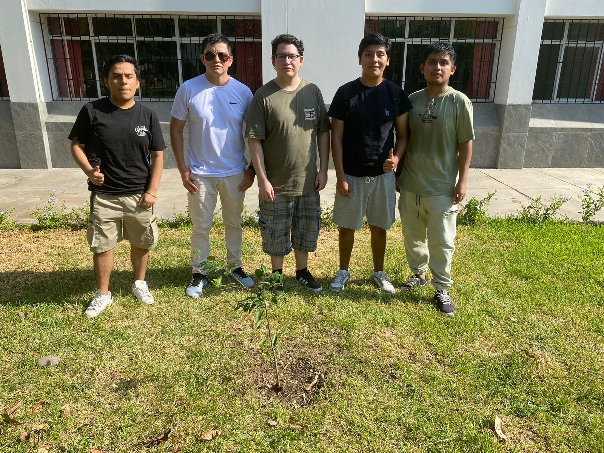
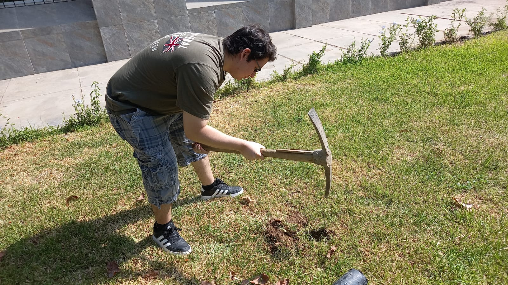
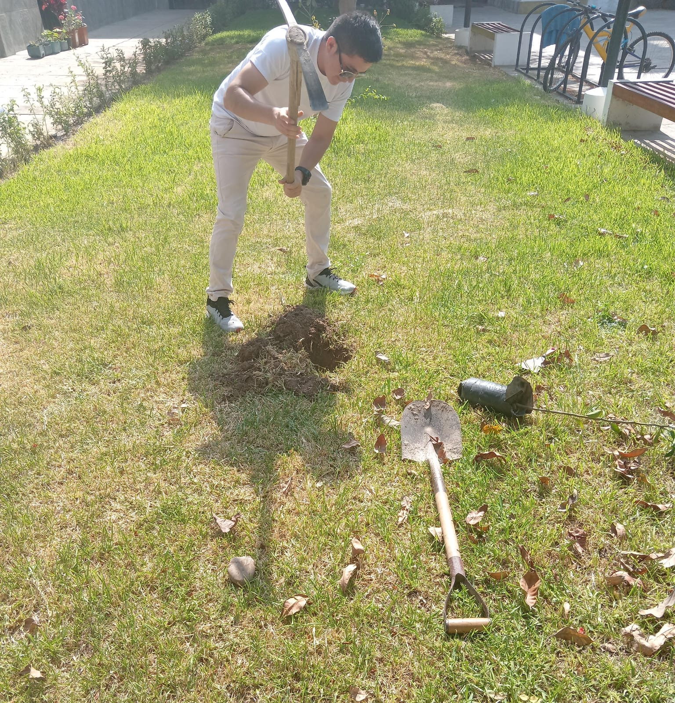
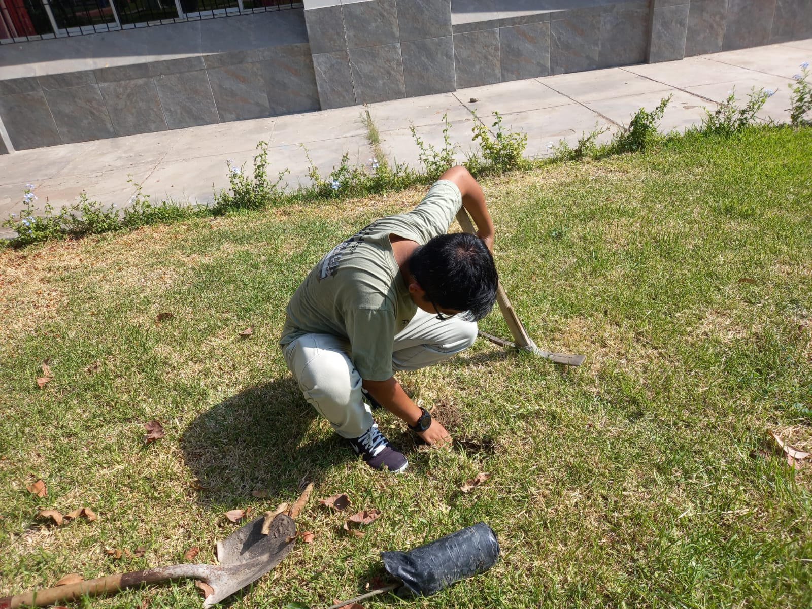
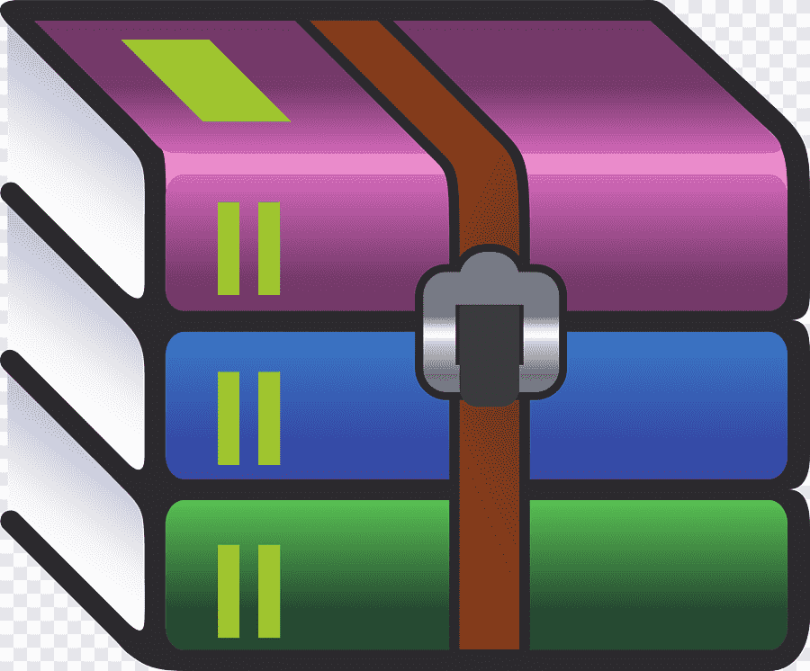

INTERACCIÓN HUMANO COMPUTADOR
“Año del Bicentenario, de la consolidación de nuestra Independencia, y de la conmemoración de las heroicas batallas de Junín y Ayacucho”
UNIVERSIDAD NACIONAL MAYOR DE SAN MARCOS
(Universidad del Perú, Decana de América)
FACULTAD DE INGENIERÍA DE SISTEMAS E INFORMÁTICA
Escuela Académico Profesional de Ingeniería de Software
1. INFORMACIÓN GENERAL
1.1. Nombre y código de la asignatura: INTERACCIÓN HOMBRE COMPUTADOR
1.2. Código de la asignatura: 202W0606
1.3. Plan de estudio: 2018
1.4. Tipo de asignatura: Obligatoria
1.5. Horas semanales: Teoría: 02 horas, Laboratorio: 02 horas
1.6. Semestre o año académico: 2024-0
1.7. Ciclo: VI
1.8. Créditos: 3
1.9. Modalidad: Presencial
1.10. Prerrequisitos: 202W0504 Computación Visual
1.11. Docente: Hugo Vega
2. SUMILLA
El curso consta de Teoría y Laboratorio. La competencia principal es conocer los fundamentos más importantes de la interacción entre las personas o seres humanos y las computadoras. Analiza, diseña, implementa y utiliza técnicas para evaluar adecuadamente las interfaces en base a criterios de usabilidad y las necesidades del usuario. Con respecto al laboratorio se afirma los conocimientos teóricos con el desarrollo de un proyecto de casos hipotéticos y/o reales en los que se consiga la aplicación de las diferentes técnicas estudiadas.
3. COMPETENCIAS GENERALES
Al finalizar la asignatura, el estudiante tendrá las siguientes competencias generales:
● CG01 Gestiona la información y la difusión de conocimientos con adecuada comunicación oral y escrita
de la propia profesión, ejerciendo el derecho de libertad de pensamiento con responsabilidad.
● CG02 Capacidad de análisis y síntesis en la toma de decisiones con responsabilidad, sentido crítico y autocrítico.
● CG03 Desempeña su profesión con liderazgo, adecuándose a los cambios y a las nuevas tendencias,
comprometido con la paz, medio ambiente, equidad de género, defensa de los derechos humanos y valores
democráticos.
● CG04 Trabaja en equipo con una perspectiva transdisciplinar para comprender y transformar la realidad
compleja.
● CG05 Genera nuevos conocimientos que aportan al desarrollo de la sociedad mediante la investigación,
con sentido ético.
● CG06 Aplica conocimientos a la práctica para resolver problemas con compromiso ético.
4. COMPETENCIAS ESPECÍFICAS
Al finalizar la asignatura, el estudiante tendrá las siguientes competencias específicas:
● CE01 Capacidad de Análisis.
● CE02 Pensamiento Critico.
● CE03 Comunicación oral y escrita.
● CE04 Aplica metodologías, métodos, técnicas.
Sílabo de curso:
PROFESOR DEL CURSO
Dr. Hugo Frolain Vega Huerta
Integrantes:
22200078 - Frank Kevin Condor Huarhuachi
13200051 - Freddy Ayala Salvatierra
17200301 - Anthony Paolo Romaní Moscoso
19200273 - Erick Fabrizio Asencios Guitierrez
15200213 - Luis Francisco Jimenez Castañeda
18200037 - Juan Carlos Paco Huamán
PLANTACIÓN DE NARANJO




CONTADOR DE VISITAS
| SEMANAS | TEMAS | CLASES | TRABAJOS | OBSERVACIONES |
| 1 |
Conceptos básicos: ● Tipos de interfaz ● Interacción Hombre ● Computadora Orígenes de los sistemas de interacción ● Usabilidad ● Etapas en la construcción de las interfaces Identificando al usuario y sus características: ● Definición de diseño centrado en el usuario ● Estudiando al usuario ● Tipos de usuarios |
IHC - SEMANA 1 - G2 |
BASE DE DATOS |
|
| 2 |
● Importancia del análisis de tareas ● Metodología del análisis ● Ejemplo práctico ● Definición de prototipo ● Tipos de prototipos ● Ventajas y desventajas del prototipado |
IHC - SEMANA 2 - G2 |
ANÁLISIS CARRITO DE COMPRAS INTELIGENTE | |
| 3 |
● Modelo del ser humano ● Los sentidos ● El modelo de la memoria ● Modelo mental ● Fundamentos del color, pautas fisiológicas, preceptúales y cognitivas ● Reglas de Marcus y Murch ● Definición de metáfora ● Tipos de metáforas ● Diseño de metáforas y su aplicación con la máxima efectividad. |
IHC - SEMANA 3 - G2 |
||
| 4 |
● Principios y directrices Estándares ● Guías de estilo ● Regla de Mandel Examen Parcial |
IHC - SEMANA 4 - G2 |
EXAMEN PARCIAL - CONDOR Y AYALA |
Falta funcionalidad: El DOCENTE puede tener a su cargo uno o más cursos por ello para poder registrar o modificar las notas primero debe seleccionar un curso. |
| 5 |
● Errores: desliz y equivocaciones ● Clasificación de un desliz ● Uso correcto de los mensajes de errores ● Ayudas al usuario ● Métodos de evaluación: inspección, indagación y pruebas |
IHC - SEMANA 5 - G2 |
PROPUESTA DE PROYECTO | |
| 6 |
● Evaluación heurística ● Diseño universal ● Tipos de discapacidades y soluciones ● Accesibilidad en la Web ● Comprobación de la accesibilidad |
IHC - SEMANA 6 - G2 |

INGRESO DE NOTAS POR VOZ |
Agrerar funcionalidad de ingreso de notas por voz una por una, sin botones. |
| 7 |
● Internacionalización y localización ● Elementos de la interfaz ● Escrituras ● Esquemas de codificación ● Zonas de internacionalización ● Modelo de internacionalización y localización ● Guía técnica ● Diferencia entre interfaces de escritorio y web ● Consideraciones principales para una aplicación web ● Consejos prácticos para la página principal |
IHC - SEMANA 7 - G2 |
||
| 8 |
● Exposición del proyecto ● Presentación del informe final del proyecto. Examen Final |